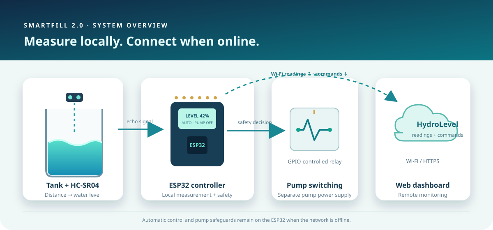
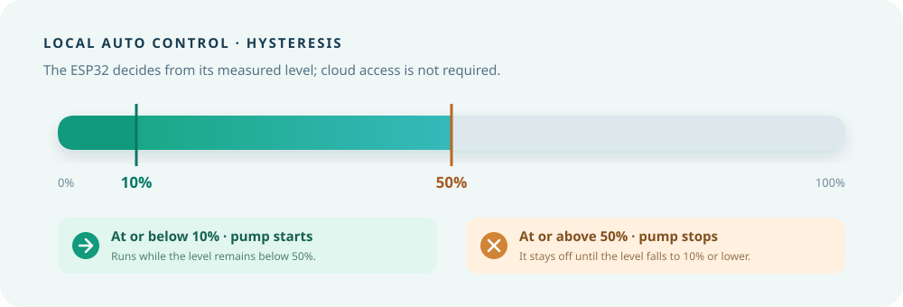
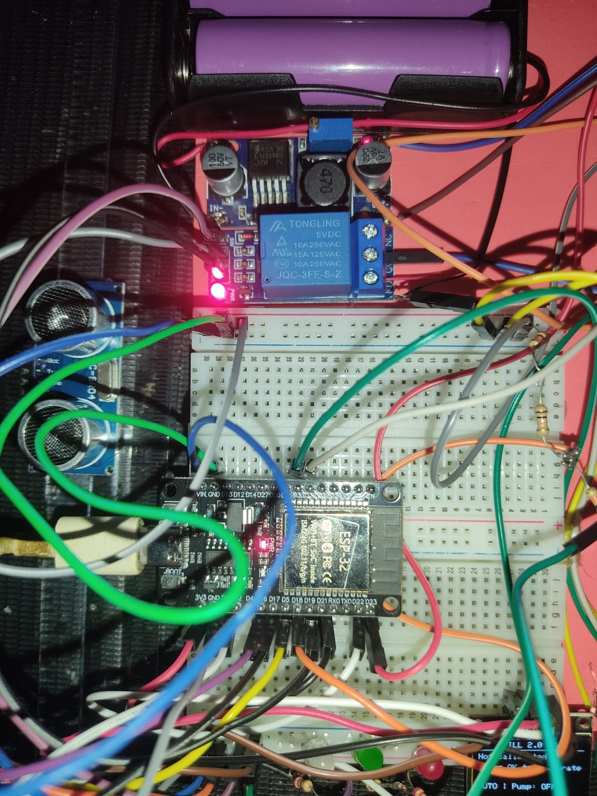

Measure
Five ultrasonic samples are filtered to estimate water height, percentage, and remaining space.
SmartFill 2.0 measures tank level locally, shows status on an OLED, and can report readings to HydroLevel. Automatic pump control and safety checks run on the ESP32.
Five ultrasonic samples are filtered to estimate water height, percentage, and remaining space.
AUTO mode starts at 10% and stops at 50%. Invalid readings, missing calibration, and a 15-minute runtime limit stop the pump.
The ESP32 posts readings and polls for commands. Wi-Fi supports monitoring and manual commands; local AUTO keeps running offline.
Wiring: The supplied diagram is a visual component reference. Follow the current firmware pin map in the connection guide where routes differ.


